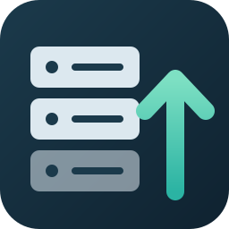

SFTP & FTP Sync and Upload
SFTP & FTP Sync and Upload, a VS Code extension by Zovo
Upload your project to a server from VS Code over SFTP, FTP or FTPS, by Zovo. Save a file and it is on the server; right-click a folder to upload or download it; open a server file in a normal tab and save it back. Your .vscode folder, .env files and private keys are never uploaded. No account, no sign-in to anything but your own server.
Free, MIT license. Needs VS Code 1.75.0 or newer. Extension ID zovo.zovo-sftp, version 0.1.0.

Questions people ask
Is SFTP & FTP Sync and Upload free?
Yes. SFTP & FTP Sync and Upload is free and MIT licensed.
How do I install SFTP & FTP Sync and Upload?
Click "Install in VS Code" above, or search for zovo.zovo-sftp in the Extensions view.
Free
.vscode/sftp.jsonwith hover help for every key: host, user, key file or password, server folder, upload on save, ignore list.- Upload on save, and Upload, Download and Compare with Server Copy on any file or folder (Explorer right-click, editor tab menu, Command Palette).
- SFTP (SSH keys, encrypted keys, the SSH agent or a password), FTP and FTPS (explicit or implicit TLS).
- Remote Files view: browse the server, open a file in a normal editor tab, save it back, download, copy the path, delete.
- Safe defaults:
.vscode,.git,.envfiles, private keys,.npmrcand other secret files are never uploaded. Passwords you type go to the editor's secret storage, never intosftp.json. - The server's host key is checked: pin it with
hostFingerprint, or confirm it on the first connection. A changed key stops the connection. - Transfer log with every connection, upload and download, and errors that say what to check (wrong port, sign-in refused, folder missing, no permission).
Zovo Pro
Zovo Pro: USD 19 once. One payment unlocks the Pro tools in every Zovo extension. Each Pro tool has 3 free tries:
- Sync folder with remote (diff preview): compares a local folder with the server and lists every difference before anything moves (only here, only on the server, newer on one side). Pick upload, download, delete or skip per file, open a side-by-side diff, save the dry run as text, then apply.
- Roll back a remote file: before an upload overwrites a server file, the old server copy is kept on this computer (last 10 per file). Put any version back on the server, or compare it with the current one.
- Server profiles and jump host: several servers in one
sftp.json(staging, production) with one click to switch, and SFTP through an SSH jump host.
Set up
Run "SFTP: Create sftp.json Config" (or click Create sftp.json in the SFTP Remote view). A minimal file:
{
"name": "My site",
"protocol": "sftp",
"host": "example.com",
"username": "deploy",
"privateKeyPath": "~/.ssh/id_ed25519",
"remotePath": "/var/www/site",
"uploadOnSave": true,
"ignore": ["node_modules/**", "*.log"]
}FTP over TLS with a password (you are asked once; leave password out of the file):
{ "protocol": "ftps", "host": "ftp.example.com", "username": "me", "remotePath": "/public_html" }| Key | What it does |
|---|---|
protocol | sftp (default), ftp or ftps |
host, port, username | The server. Port defaults to 22 (sftp) or 21 (ftp, ftps) |
privateKeyPath, passphrase | SFTP key file. Encrypted keys ask for the passphrase once |
agent | SSH agent socket. Used by default when there is no key file |
remotePath | Server folder that matches your local folder (~/site works too) |
context | Local subfolder that matches remotePath, such as dist |
uploadOnSave | Upload each file when you save it |
ignore | Extra patterns in the .gitignore style; useDefaultIgnore: false turns the default list off |
hostFingerprint | Pin the SSH host key (SHA256:... from ssh-keygen -lf) |
secure, rejectUnauthorized | FTPS: "implicit" for port 990 servers; false accepts a self-signed certificate |
profiles, defaultProfile, hop | Several servers and a jump host (Pro) |
Commands
All commands are under "SFTP" in the Command Palette: Upload, Download, Compare with Server Copy, Create or Open sftp.json Config, Refresh Remote Files, Show Transfer Log, Forget Saved Passwords and Trusted Host Keys. The Pro tools end in "(Pro)" and are also in the Explorer right-click menu ("Zovo Pro: ...") and the SFTP Remote view menu. A try counts only when the tool produced its result (a sync plan on screen, a file rolled back, a profile switched); Escape or Cancel never uses one. Nothing about Pro shows when you open VS Code, and zovoSftp.showProTools: false hides all of it.
Zovo Pro is USD 19 once (team of 5: USD 59). Run Zovo Pro: Get Zovo Pro to pay by card, with GitHub Sponsors or PayPal, or to enter a key.
Settings
zovoSftp.idleSeconds: seconds a connection stays open with nothing to do (default 120).zovoSftp.savePasswords: keep typed passwords and passphrases in secret storage (default on).zovoSftp.backup.enabled,zovoSftp.backup.maxFileMB,zovoSftp.backup.versionsPerFile: old server copies kept before an overwrite.zovoSftp.sync.defaultDirection:up,downornewestfor a new sync plan.zovoSftp.remoteExplorer.hideIgnored: hide ignored files in the Remote Files view.
Privacy and safety
The extension connects only to the servers in your sftp.json, and only when you act: a command, a save with uploadOnSave, or opening a folder in the Remote Files view. Nothing connects when VS Code starts. No telemetry. In a folder you have not trusted (Restricted Mode) the extension stays off, so a downloaded project cannot send your files anywhere.
Known limits
- One connection per server at a time; FTP transfers run one after another.
- Comparing in a sync uses size and modified time, then compares the bytes of same-size files (up to 300 files or 64 MB per run). FTP servers that only give minute-level times are compared with a 1 minute margin.
- Symbolic links on the server are followed for files and shown, but linked folders are not walked by folder uploads, downloads or sync.
- Keys in PuTTY
.ppkformat must be converted to OpenSSH first (puttygen key.ppk -O private-openssh -o key). - Backups are kept for files up to 5 MB (setting) and stay on this computer only.
Guides
Install SFTP & FTP Sync and Upload
Click the button to open VS Code and install it, or press Ctrl+P (Cmd+P on macOS) in VS Code and run ext install zovo.zovo-sftp.
Free, MIT license. Needs VS Code 1.75.0 or newer. Extension ID zovo.zovo-sftp, version 0.1.0.
Source code and issues are on GitHub.
Zovo Pro and support
Zovo Pro: USD 19 once, every Zovo viewer. It turns on the Pro tools in this extension and in the other Zovo extensions you use. The free features stay free.
After a card payment your license key shows on the next page. Paste it with the command "Zovo Pro: Enter a key".
You can also support the work with no Pro:
Need your format supported?
Open a format request with a sample file, and I reply there whether it can be done. For USD 299 once, through this GitHub Sponsors tier, I add your file format or a missing feature to this extension, with tests, within 7 days.